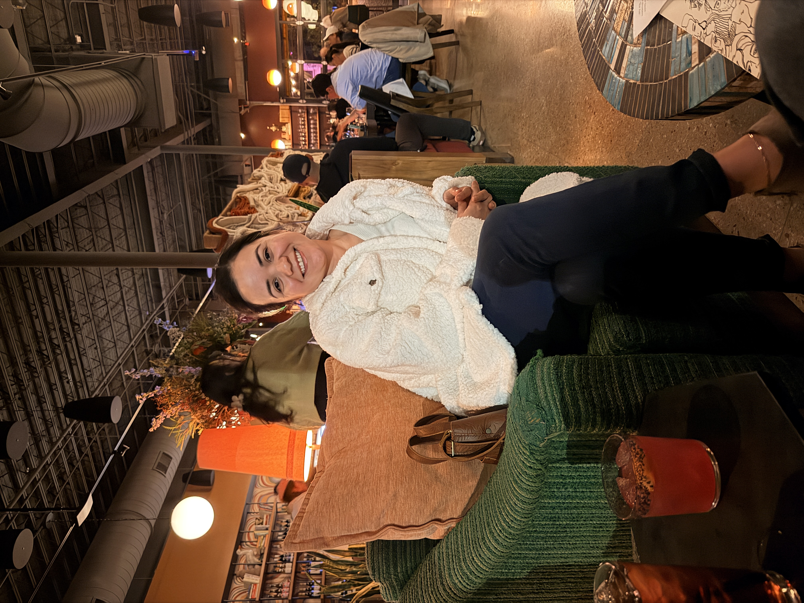

<!DOCTYPE html>
<html lang="en">
<head>
  <meta charset="UTF-8" />
  <meta name="viewport" content="width=device-width, initial-scale=1.0" />
  <title>For Clarissa, May 8</title>
  <link rel="stylesheet" href="style.css" />
  <script src="preview.js" defer></script>
  <style>
    .wife-hero { background: radial-gradient(ellipse at 30% 70%, rgba(9, 121, 105, 0.08) 0%, transparent 60%),
                              radial-gradient(ellipse at 80% 20%, rgba(201, 166, 110, 0.1) 0%, transparent 50%); }
    .wife-hero h1 em { display: block; font-size: 0.85em; }

    .trait-grid {
      display: grid;
      grid-template-columns: repeat(auto-fill, minmax(200px, 1fr));
      gap: 1rem;
      margin: 2.5rem 0;
    }

    .trait-card {
      background: white;
      border-radius: 1rem;
      padding: 1.5rem 1.25rem;
      text-align: center;
      border: 1px solid var(--gold-light);
      box-shadow: 0 3px 14px var(--shadow);
    }

    .trait-card .t-icon { font-size: 2rem; display: block; margin-bottom: 0.5rem; }
    .trait-card h4 {
      font-family: 'Playfair Display', serif;
      font-size: 1rem;
      color: var(--deep-rose);
      margin-bottom: 0.4rem;
    }
    .trait-card p { font-size: 0.85rem; color: var(--muted); margin: 0; line-height: 1.6; }

    .full-bleed-photo {
      width: 100%;
      max-height: 480px;
      object-fit: cover;
      border-radius: 1.25rem;
      display: block;
      margin: 0 auto;
    }

    .photo-caption {
      text-align: center;
      font-family: 'Cormorant Garamond', serif;
      font-style: italic;
      color: var(--muted);
      font-size: 0.95rem;
      margin-top: 0.75rem;
    }

    .timeline {
      border-left: 2px solid var(--gold-light);
      padding-left: 2rem;
      margin: 2rem 0;
      display: flex;
      flex-direction: column;
      gap: 2rem;
    }

    .timeline-item { position: relative; }

    .timeline-item::before {
      content: '✦';
      position: absolute;
      left: -2.6rem;
      top: 0.1rem;
      color: var(--gold);
      font-size: 0.75rem;
      background: var(--cream);
      padding: 0 0.15rem;
    }

    .timeline-item .t-label {
      font-size: 0.68rem;
      font-weight: 600;
      letter-spacing: 0.15em;
      text-transform: uppercase;
      color: var(--gold);
      margin-bottom: 0.4rem;
      display: block;
    }

    .timeline-item h4 {
      font-family: 'Playfair Display', serif;
      font-size: 1.15rem;
      color: var(--deep-rose);
      margin-bottom: 0.4rem;
    }

    .timeline-item p { font-size: 0.95rem; color: var(--charcoal); margin: 0; }

    .big-quote {
      text-align: center;
      padding: 4rem 2rem;
      max-width: 680px;
      margin: 0 auto;
    }

    .big-quote p {
      font-family: 'Playfair Display', serif;
      font-style: italic;
      font-size: clamp(1.3rem, 3vw, 2rem);
      color: var(--deep-rose);
      line-height: 1.5;
      margin: 0;
    }

    .big-quote .attr {
      font-family: 'Raleway', sans-serif;
      font-size: 0.8rem;
      font-style: normal;
      color: var(--muted);
      letter-spacing: 0.1em;
      margin-top: 1.25rem;
    }

    .nav-footer {
      display: flex;
      justify-content: center;
      align-items: center;
      gap: 1.5rem;
      padding: 3rem 2rem;
      flex-wrap: wrap;
    }

    .nav-footer a.disabled {
      opacity: 0.4;
      pointer-events: none;
      cursor: default;
    }
  </style>
</head>
<body>

  <nav class="site-nav" id="siteNav"></nav>
  <div id="petals"></div>

  <div id="pageContent"></div>

  <script>
    // ── Date gate ────────────────────────────────────────────
    const PAGE_DATE = { year: 2026, month: 5, day: 8 };
    const UNLOCK = new Date(PAGE_DATE.year, PAGE_DATE.month - 1, PAGE_DATE.day, 0, 0, 0);

    function isUnlocked() { return new Date() >= UNLOCK || localStorage.getItem('tjpreview') === '4031'; }

    function countdown() {
      const diff = UNLOCK - new Date();
      if (diff <= 0) return null;
      return {
        h: Math.floor(diff / 36e5),
        m: Math.floor((diff % 36e5) / 6e4),
        s: Math.floor((diff % 6e4) / 1e3)
      };
    }

    // ── Nav ──────────────────────────────────────────────────
    function buildNav() {
      const nav = document.getElementById('siteNav');
      const pages = [
        { href:'index.html', label:'Home', date:null },
        { href:'may8.html', label:'May 8', date:{ year:2026,month:5,day:8 } },
        { href:'may9.html', label:'May 9', date:{ year:2026,month:5,day:9 } },
        { href:'may10.html', label:'May 10', date:{ year:2026,month:5,day:10 } }
      ];
      pages.forEach(p => {
        const a = document.createElement('a');
        a.href = p.href;
        a.textContent = p.label;
        if (p.date) {
          const ul = new Date(p.date.year, p.date.month-1, p.date.day);
          if (new Date() < ul) a.classList.add('locked');
        }
        if (window.location.pathname.endsWith(p.href) || (p.href==='may8.html' && window.location.pathname.endsWith('may8.html'))) {
          a.classList.add('active');
        }
        nav.appendChild(a);
      });
    }

    buildNav();

    // ── Render ───────────────────────────────────────────────
    const content = document.getElementById('pageContent');

    if (!isUnlocked()) {
      // Show locked state with countdown
      content.innerHTML = `
        <div class="locked-page">
          <a href="index.html" style="text-decoration:none;color:var(--muted);font-size:0.8rem;letter-spacing:0.1em;margin-bottom:2rem;display:block;">← Back Home</a>
          <div class="lock-icon">🔒</div>
          <h2>Almost Time…</h2>
          <p class="script" style="font-style:italic;font-size:1.1rem;">This page opens at midnight on May 8th.<br>Check back soon, love.</p>
          <div class="countdown" id="cd">
            <div class="countdown-block"><span class="num" id="cdH">--</span><span class="label">Hours</span></div>
            <div class="countdown-block"><span class="num" id="cdM">--</span><span class="label">Mins</span></div>
            <div class="countdown-block"><span class="num" id="cdS">--</span><span class="label">Secs</span></div>
          </div>
          <a href="index.html" class="btn" style="margin-top:1rem;">Go Back Home</a>
        </div>`;

      function tick() {
        const c = countdown();
        if (!c) { location.reload(); return; }
        document.getElementById('cdH').textContent = String(c.h).padStart(2,'0');
        document.getElementById('cdM').textContent = String(c.m).padStart(2,'0');
        document.getElementById('cdS').textContent = String(c.s).padStart(2,'0');
      }
      tick();
      setInterval(tick, 1000);

    } else {
      // ── FULL PAGE ────────────────────────────────────────
      content.innerHTML = `

        <!-- HERO -->
        <div class="hero wife-hero">
          <span class="hero-tag">May 8th &nbsp;✦&nbsp; Day One</span>
          <h1>To My Wife, Clarissa<em class="script">The Woman Who Changed Everything</em></h1>
          <div class="hero-divider"><span>✦</span></div>
          <p class="hero-sub script">
            "You are my today and all of my tomorrows, Clarissa."
          </p>
        </div>

        <!-- OPENING LETTER -->
        <div class="section">
          <span class="section-label">A Letter</span>
          <h2>Where Do I Even Begin?</h2>

          <div class="letter-wrap">
            <p>
              My love, I've started writing this a hundred times. I've tried to capture in sentences
              what you mean to me, what our life together means, and every single time I fall short,
              because the truth is, there are no words big enough for a person like you.
            </p>
            <p>
              You are the kind of woman that people write songs about. The kind they try to paint
              and sculpt and describe in poetry, but always fail, because you can't compress that much
              warmth into something that fits on a page. And yet here I am, trying anyway, because
              you deserve to hear it, again and again, every single day.
            </p>
            <p>
              Being your husband is the greatest thing I have ever been. Not just because of who you
              are in the grand moments, though God, those moments, but because of who you are in
              the ordinary ones. The quiet Tuesday mornings. The silly arguments about nothing.
              The way you laugh when something catches you off guard. The way you always, always
              make wherever we are feel like home.
            </p>
            <p>
              I see you. I see how hard you work, how much you give, how much you carry.
              I see the beauty in you that you sometimes forget to see in yourself.
              And I want you to know, I am in awe of you. Every single day.
            </p>
          </div>
        </div>

        <!-- PHOTO ROW 1 -->
        <div class="section" style="padding-top:0">
          <div class="photo-grid cols-2">
            <div class="photo-slot tall">
              
            </div>
            <div class="photo-slot tall">
              
            </div>
          </div>
        </div>

        <!-- WHAT MAKES YOU EXTRAORDINARY -->
        <div class="section">
          <span class="section-label">The Real You</span>
          <h2>What Makes You <em class="script" style="font-size:1em;">You</em></h2>
          <p>
            There is so much about you that I want the world to see the way I see it.
            Let me try to name just a few of the things that make my heart full every day.
          </p>

          <div class="trait-grid">
            <div class="trait-card">
              <span class="t-icon">🧠</span>
              <h4>Your Mind</h4>
              <p>The way you think, deeply, critically, with a clinical precision that saves lives at work and solves everything at home. You see things others miss.</p>
            </div>
            <div class="trait-card">
              <span class="t-icon">💚</span>
              <h4>Your Heart</h4>
              <p>You chose a career built entirely on caring for people at their most vulnerable, and you bring that same tenderness home every single day.</p>
            </div>
            <div class="trait-card">
              <span class="t-icon">📚</span>
              <h4>Your Curiosity</h4>
              <p>You are always reading, always learning, always growing. A book in your hands is one of my favorite versions of you, completely in your element.</p>
            </div>
            <div class="trait-card">
              <span class="t-icon">🌿</span>
              <h4>Your Nurturing</h4>
              <p>You keep monsteras alive. You keep this family alive. There is something deeply telling about how effortlessly you make things grow.</p>
            </div>
            <div class="trait-card">
              <span class="t-icon">🧘</span>
              <h4>Your Balance</h4>
              <p>Yoga isn't just a hobby, it's how you stay grounded when the world asks everything of you. That intentional stillness is one of your superpowers.</p>
            </div>
            <div class="trait-card">
              <span class="t-icon">🤝</span>
              <h4>Your Loyalty</h4>
              <p>When you are with someone, you are fully with them. You show up completely, at work, at home, for our family. Every time. No matter what.</p>
            </div>
          </div>
        </div>

        <!-- ORNAMENT -->
        <div class="ornament">✦ ✦ ✦</div>

        <!-- HEART TEAM -->
        <div class="section">
          <span class="section-label">The Heart Team</span>
          <h2>What Your Hospital Recognized, What I Always Knew</h2>
          <div class="letter-wrap">
            <p>
              Let me tell you something about the day you told me you were being added to the heart team.
              You said it casually, like it was just a scheduling update, like it wasn't one of the most
              impressive things I had ever heard. That is so <em>you</em>, doing extraordinary things
              and treating them like they're ordinary.
            </p>
            <p>
              The heart team doesn't just let anyone in. That is a room full of the most skilled,
              most experienced, most trusted nurses in that hospital. And they looked at your work ethic,
              your clinical judgment, your dedication to your patients, and they said: <em>her</em>.
              They chose you because you are exceptional.
            </p>
            <p>
              I am so proud of you I don't have words for it. You spent years pouring yourself into
              that career, the long shifts, the emotional weight of caring for people in crisis,
              the constant learning and growing, and it has added up to something real. Something
              recognized. Something that matters.
            </p>
            <p>
              You take care of people's hearts for a living, Clarissa. And then you come home and
              take care of ours. I don't think you fully understand how remarkable that is.
              But I do. And I need you to know that I see it.
            </p>
          </div>
        </div>

        <!-- WHAT YOU DO FOR US -->
        <div class="section">
          <span class="section-label">What You Do</span>
          <h2>Everything You Do That I Notice</h2>
          <p>
            I want to be honest with you: I notice more than I say. I see all the things you do
            to keep our world spinning, the small acts of love that never make the highlight reel
            but make up the whole beautiful fabric of our life together.
          </p>

          <div class="timeline">
            <div class="timeline-item">
              <span class="t-label">The Little Things</span>
              <h4>You make everything better just by being there</h4>
              <p>The way you check in, the texts just to say you're thinking of me, the way you remember what matters to me, you pay attention to us in ways that mean everything.</p>
            </div>
            <div class="timeline-item">
              <span class="t-label">The Hard Things</span>
              <h4>You face the hard stuff head-on</h4>
              <p>When life gets messy, you don't run. You stand your ground, and you stand beside me. That kind of courage is a gift I don't take lightly.</p>
            </div>
            <div class="timeline-item">
              <span class="t-label">The Quiet Things</span>
              <h4>You love without keeping score</h4>
              <p>You give freely, your time, your energy, your heart. You don't hold a tally. You just love. And that is extraordinary.</p>
            </div>
            <div class="timeline-item">
              <span class="t-label">The Beautiful Things</span>
              <h4>You make our house a home</h4>
              <p>It's not the décor or the meals or any single thing, it's your spirit in it all. Every space you occupy becomes somewhere worth being.</p>
            </div>
          </div>
        </div>

        <!-- PHOTO ROW 2 -->
        <div class="section" style="padding-top:0">
          <div class="photo-grid cols-3">
            <div class="photo-slot">
              
            </div>
            <div class="photo-slot">
              
            </div>
            <div class="photo-slot">
              
            </div>
          </div>
        </div>

        <!-- QUOTE -->
        <div class="big-quote">
          <p>"Choosing you, every day, in every version of our story, is the easiest choice I have ever made."</p>
          <p class="attr">- Your husband, who is the luckiest man alive</p>
        </div>

        <!-- CLOSING -->
        <div class="section">
          <span class="section-label">Always</span>
          <h2>What I Want You to Know</h2>
          <div class="letter-wrap">
            <p>
              I want you to know that you are loved, not for what you do, not for how hard you try,
              not for what you give, but for who you are. Exactly as you are, right now, in this moment.
            </p>
            <p>
              I want you to know that I am proud of you. Proud of the person you've become, proud of
              the life we're building, proud to walk beside you every single day.
            </p>
            <p>
              I want you to know that when I look at my life and everything in it, you are the part
              that makes all the rest of it make sense.
            </p>
            <p>
              Thank you for being my wife. Thank you for being you.
              Come back tomorrow, there's more I need to say.
            </p>
            <p style="margin-top:2rem;font-family:'Cormorant Garamond',serif;font-style:italic;font-size:1.1rem;color:var(--deep-rose);">
              With all of my love, every day of my life,<br>TJ
            </p>
          </div>

          <div style="text-align:center;margin-top:2.5rem;">
            <p class="script" style="color:var(--muted);font-size:1rem;">Come back tomorrow for something even more special…</p>
          </div>
        </div>

        <!-- NAV FOOTER -->
        <div class="nav-footer">
          <a href="index.html" class="btn" style="background:white;color:var(--deep-rose);border:1.5px solid var(--rose);box-shadow:none;">← Home</a>
          <a href="may9.html" class="btn" id="nextBtn">May 9 →</a>
        </div>

        <div class="page-footer">Made with love for Clarissa, by TJ. Always. ✦</div>
      `;

      // Disable next btn if not yet available
      const may9Unlock = new Date(2026, 4, 9, 0, 0, 0);
      if (new Date() < may9Unlock) {
        const nb = document.getElementById('nextBtn');
        nb.classList.add('disabled');
        nb.style.opacity = '0.4';
        nb.style.pointerEvents = 'none';
        nb.textContent = 'May 9 (unlocks tomorrow)';
      }
    }

    // ── Floating petals ──────────────────────────────────────
    const PETALS = ['📚','📖','🌿','🍃','💚','🪴','🌱'];
    const pc = document.getElementById('petals');
    for (let i = 0; i < 12; i++) {
      const el = document.createElement('span');
      el.className = 'petal-particle';
      el.textContent = PETALS[Math.floor(Math.random() * PETALS.length)];
      el.style.cssText = `left:${Math.random()*100}%;bottom:-2rem;font-size:${0.6+Math.random()*0.8}rem;animation-duration:${12+Math.random()*16}s;animation-delay:-${Math.random()*20}s;`;
      pc.appendChild(el);
    }
  </script>
</body>
</html>
